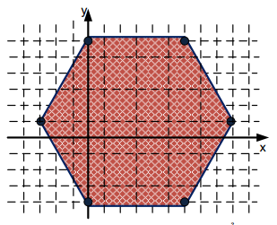

Lục giác đều là một dạng cấu trúc đặc biệt trong thiên nhiên. Bạn có thể gặp lục giác đều khi quan sát cách bố trí cánh của nhiều loại hoa, khi quan sát cấu trúc của tổ ong, khi nghiên cứu sơ đồ liên kết giữa Các bon và Ô xy trong các hợp chất hữu cơ và vô cơ. Mũ đinh ốc cũng tạo thành một lục giác đều. Lục giác đều là một trong số hiếm hoi các loại đa giác đều có thể phủ kín mặt phẳng.
 Một bạn sinh viên quyết định chọn “Vai trò và vị trí của lục giác đều trong thiên nhiên” làm đề tài báo cáo trong một buổi sinh hoạt ngoại khóa. Để chuẩn bị số liệu cho bản thuyết trình của mình bạn đó đã khảo sát rất nhiều dữ liệu về cấu trúc lục giác gặp trong thiên nhiên và cuộc sống. Mỗi dữ liệu khảo sát là một dãy tọa độ 6 đỉnh trong mặt phẳng của lục giác. Bạn sinh viên muốn biết 6 điểm này có thể là đỉnh của một lục giác đều hay không. Ví dụ, nếu tọa độ của 6 điểm nhận được là (-3,1), (6,6.19615), (0,6.19615), (9,1), (0, -4.19615), (6, -4.19615) thì câu trả lời là có. Với dữ liệu phong phú thu thập được, việc kiểm tra trở thành một công việc nặng nề và tẻ nhạt nếu không sử dụng máy tính.
Yêu cầu: Cho tọa độ 06 đỉnh (xi, yi). Hãy kiểm tra xem 06 đỉnh trên có tạo thành một hình lục giác đều hay không.
Dữ liệu nhập:
- Là 06 cặp số thực (xi, yi), mỗi số cách nhau một khoảng trắng (-103 ≤ xi, yi ≤ 103).
Dữ liệu xuất:
- Nếu 06 đỉnh trên tạo thành hình lục giác đều, in ra YES.
- Nếu không, in ra NO.
Lưu ý: Các giá trị thực được so sánh với độ chính xác 10-4.